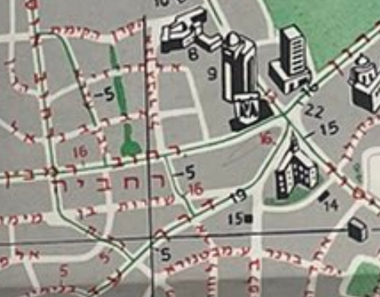
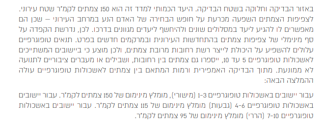
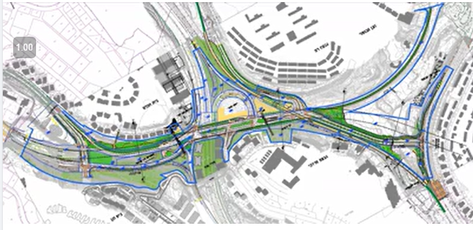

בין פת לצרפת - סיור צמתים|3.5.24|פסטיבל הליכות ג’יין ירושלים 2024
צומת 1: כיכר צרפת - משמעות רחוב עזה לעיר כיום. מהי כיכר?
מפה מ1926
לא הייתי מודע להיסטוריה התחבורתית של כיכר צרפת. מעניין מאוד, ומה שיותר מעניין זה מי תיעד ברמה כזאת והאם הוא עשה את זה לסמינר https://t.co/TgdvSUQ8Rf pic.twitter.com/tjKLr7LqUX
— Ido Klein עדו קליין (@idoklein1) January 31, 2024
צומת 2: בלפור בן מימון - הפספוס של בלפור
צומת 3: ארלוזורוב - נתצ בעזה?


צומת 4: ראבד - האם מעבר הולכי רגל נחשב כצומת?

צומת 5: רדק - תשתיות אופניים טקטיות
צומת 6: האר”י מטודלה - איסורי פניות ותחביר המרחב
בעזה, הפנייה שמאלה מהזז אל עזה + איסור הפניות שמאלה במטודלה מגלמים בתוכם את הרמיסה של התנועות המקומיות + הגישה לשכונה ברכב פרטי של תושבי רחביה. pic.twitter.com/BYJIdpspER
— Ido Klein עדו קליין (@idoklein1) February 15, 2024
צומת 7: גינת ביבי - האם רחוב נפרד?
צומת 8: שינוי שם הרחוב + רכבת + שינוי מדרג הרחוב. משמעות בעבר


צומת 9: התיבונים - טעות תכנונית או שינוי שהיה נצרך
צומת 10: צומת המצלבה - משמעות היום ובעבר


צומת המצלבה. עובר שם מדי יום וכמעט לא ראיתי רכב שפונה ימינה מטשרניחובסקי לעזה. ואכן, ספירות תנועה מראות שמדובר ב-283 רכבים ביום (=כלום ושום דבר). זה אומר שאין שום סיבה להשאיר שם נתיב ימינה חופשי - אפשר היה להרחיב את המדרכה ואולי גם את הגינה הסמוכה. אבל מה הסיכוי.@Jlm_city pic.twitter.com/BpEdoopcfh
— איתמר שחר 🎗️ (@itamar_sh) February 15, 2024
צומת 11: מדרגות מול ניות


צומת 12: צומת ניות
צומת 13: חיבה


למשל הפנינה המדהימה הזאת - פעם שמעוני לא היה מחובר בכלל להרצוג. שמעוני היה מחובר דרך "מעבר ולירו", כפי שזקני השכונה מכירים אותו כ"כביש הסגור" בגלל בעלות פרטית. הגישה אל ולירו הייתה באמצעות רחוב שלא קיים היום. הצהוב אינו נתיב זהרה. pic.twitter.com/y7zypgfPBj
— Ido Klein עדו קליין (@idoklein1) August 1, 2023
צומת 14: אל מול המשך 16 - מאבק איתמר

למה? יש שיגידו בגלל הכביש שירות, אבל הסיבה היא ככל הנראה כי אין אפשרות לייצר תחנה מקבילה - אי אפשר לעשות גשר מעבר לכביש (כאילו אפשר אבל זה יקר). pic.twitter.com/g5fYabKCvM
— Ido Klein עדו קליין (@idoklein1) February 18, 2021
צומת 15: סולם יעקב

צומת 16: בית הנוער העברי


צומת 17: מחלף פת